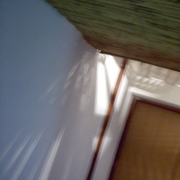
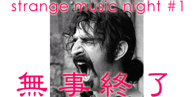

strange music page
* * * 2003.10
|

|
#布団から天井のすみっこ。
今月はライヴ行きすぎになりそう。
18日のイベントよろしくね。
|
|
2003.9 / 2003.11
|
-2003.10.26 久しぶりに実家に帰ったら
#弟は「勝井祐二+外山明 @ 渋谷QUATTRO」に行ってたみたいです。
#親父には、こないだの「片山広明+翠川敬基+井野信義+太田恵資 @ 音や金時」が面白かったと言われました。
・・・俺がマニアなのは俺だけのせいじゃない、って事をこのサイトを見てる方々に訴えかけてみたいです。
♪buffalo daughter/shychic
-2003.10.25 鈴木さえ子+松尾清憲行き損ねた・・・
♪rachel's/systems/layers
-2003.10.20 どーもでした。

#そんな訳で、土曜日には[strange music night #1]とか言って、もう閉店した元住吉freak outをわざわざ開けてもらって。ヘンな音楽イベントをやらせていただきました。
いやその最初はどーなる事かと思ってたんですけど、結果としては沢山のお客さんに来て頂いて。ものすごく嬉しかったです。
来ていただいた方、改めてほんとにありがとうございます。お店にも（マスター、インターネットやらないって言ってたから見てないだろけど）ほんと感謝です。ほんとに無くなってしまうのが惜しいなと思います。
あと勿論協力して頂いた、DJの方々。当初の意図としては「何でもアリ」みたいな事は思ってたんですけど、おかげさまで自分じゃ想像つかないくらい「何でもアリ」なイベントになりました。ありがとうございます、またやりましょう。
ちなみにテレビに映っていたジェネシスとイエスの映像はsatomilkさんに持ってきてもらいました、結構ウケてたなぁ。あとザッパのビデオは店のマスターの所有物。こちらもサンクスです。
あ、そうだなんかこの日は緊張してて（本番に弱いタイプ）写真とかほとんど撮らなかったので、デジカメで写真撮った人は送っていただけると嬉しいです。
来て頂いた方にはどんなイベントに見えたのか結構謎なのですが、やってる本人的にも非常に楽しかったので、またやりたいなーと思います。その時はまたよろしくお願いします。よろしくね。（他力本願かよ！って声が聞こえてきそーな・・・）
そんな訳で、セットリストです↓長いです。敬称略で失礼します。
風街まろん
- FRANK ZAPPA/PEACHS EN REGALIA
- ISABELLE ANTENA/VILLAGE OF THE SUN
- CURVED AIR/ONCE A GHOST,ALWAYS A GHOST
- ARTI+MESTIERI/SAPER SENTIRE
- MARC RIBOT/NATURE ABHORS A BACUUM CLEANER
- FAIRPORT CONVENTION/DIRTY LINEN
- IVO PAPASOV/BULCHENSKA RATCHENITSA
- CAL TJADER/MINDORO
- SHUGGIE OTIS/XL-30
- GENTLE GIANT/ON REFLECTION
菅原悠
#・・・セットリスト聞いたら「忘れた」とか言ってました。
思い出したら教えてくれ。って見てないか。
#てなわけで、追加。他にも色々混ぜてたらしいけど。
- ジムオルーク
- アオキタカマサ
- 池田亮司
- muto takeshi
- ミートビートマニフェスト
- ヌジャべス
- shingo2
- so takahashi
- amon tobin
- スコットへレン
- nex time
さいと
- I AM SPOONBENDER / Reality Dealer [URL]
- NEED NEW BODY / Titiepop [URL]
- YELLOW KITCHEN / T at A（韓国エレクトロニカ？） [URL]
- BARNES AND BARNES / Fish Heads（同）[URL]
- HARRY ROESLI / Lembe Lembe（ガムラン＋ムーグ）
- HARRY ROESLI / Kalima Gobang
- 井上陽水 / 夜のバス（エピタフ系好きすき）
- ADA / Madah Illahiah（構成がFirth of Fifthだ） [URL]
- LAENFANT / ??（タイのカーディガンズ）[URL]
sasakidelic
- Vagabond & Harry "Christmas was Late!!!"
- Serge Gainsbourg "Freedom Rock / Mister Freedom" (from O.S.T. "Mister Freedom")
- Raymond Scott " Powerhouse"
- Stock, Hausen & Walkman "Hairy Globe"
- Sachiko M. "Don't Touch" + Ryoij Ikeda "testone" mix
- Suicide "Ghost Rider"
- Kim Hiorthoy "Cow Cow (sheep sheep)"
- Busta Rhymes featuring PHARRELL "Light Your A** On Fire"
- Lady Of Rage "Unfucwitable"
- Serge Gainsbourg featuring Telegram "Overseas Telegram"
- Faust "Untitled" (1' 18")
- Yann Tomita "Laughter Robot in Silicon Valley"
- Sandii "Mercy"
- Elly Ameling, Dalton Baldwin "An die Musik, Op.88 No.4 D.547(Franz Schubert)
- Serge GainsBourg "Sea, sex and sun" (追加)
- The Velvet Underground "Guess I'm Falling In Love (Instrumental Version)"
- Joy Division "Warsaw"
- Neu! "Crazy"
- Caetano Veloso "Let It Bleed"
- dreamies (auralgraphic entertainment) "Program Eleven" + Sachiko M. "Don't Push" mix
- Sun Ra "Spontaneous Simplicity" (Live)
- Faust "No Harm"
DJ高尾山 (堀越裕)
- Syd Barrett/Bob Dylan blues
- Doors/Break on through
- Velvet Underground/run run run
- Stoogies/No Fun
- CCR/Suzie Q
- JB's/Transmograpfication
- Nicky Hopkins/Waiting for the band
- Todd Rundgren/It takes two to tango
- Trans Am/Futre World
- Yes/Tempus Fugit
クドウハルヲ
#全曲に解説までつけてbbsに上げて頂いたので、そのまま載せちゃいます。
- 1.マグマ／最後の７分間（1970－1977第１段階）
→俺の前、堀越ＤＪ（正統派ロックＤＪに感服！）のラストに流れたＹＥＳのハイテンションぶりに触発されて、の選曲。これ１曲目にした段階で、今回のノリは決まってしまった気がしますね、今思うと。
- オールタイチ／ViVi-MAR-Chan
→謎語ヴォーカル繋がり。関西アンダグラウンドで話題の“自作トラックで歌うＤＪ”の第１作12インチから。先週ライヴ観てブッたまげてしまったその衝撃を、ＳＭＮにこそバラ撒きたかった。
- unbeltipo／Method of panic
此処に来てる人には説明不要でしょう、今堀恒雄ソロユニット２作目の１曲目。アニメ劇伴とか井上陽水や坂本真綾のバックをやりながらこんな音を脳内で流してるんだから、感嘆したり呆れたり。タイトル命名は岸野雄一社長。
- 連続射殺魔／Mobile Chocolate
→要するに琴桃川凛＝和田哲郎。あれこれ言われたり黙殺されることの多い人ですが、音楽とギターは本当に素晴らしい。この曲の入ったＯＺから出てる２枚組『玉琴へのジョギング』はとりあえず買っといて損はない、と思う。
- ザ・レジデンツ／「ア・デイ・イン・ライフ」の谷の向こうに
→ビートルズのダビング＋コラージュだけで作成された一曲。今思えばレジ版「サティスファクション」のほうがよかった気もしますが。どっちにしてもこの方々にしか出来ないカヴァー＝批評の上級例ですね。
- スーパーモコ・ウルトラビーバー＆超オリーブ／エニウェイ・ザ・ウィンド・ブロウズ
→今回の隠し玉。先日初単行本『ピントがズレる音』（必読！）を上梓したばかりの安田謙一＋元モダチョキ矢倉両氏プロデュースによるＦＺカヴァーシングル。ヴォーカルはなんと大西ゆかり！この歌声だけでもＦＺに聴かせたかった！
- エグベルト・ジスモンチ／コラソン・ダ・シダーヂ
→５年前くらいか？ＥＣＭ期と比べて全然ＣＤ化が進んでなかったブラジルＥＭＩ期のジスモンチが数作ＣＤ化されましたが、何故かこの曲が入ったアルバムはそれから省かれたんですね。名作なのに。「生楽器の演奏がとんでもない人の打ち込みは本当にとんでもない」といういい見本、と言えるでしょう。大好き！
- ファンタスティック・エクスプロージョン／BLUE CHONWA
→その昔、どおくまん作「嗚呼！花の応援団」という漫画がありまして映画にもなりましたが、イメージアルバムも作られて、そっからシングルカットされたのがこれの原曲「SOULチョンワ」。この曲を、あろうことかニュー・オーダー仕様でカヴァー（というかリミックス）したのがこれ。曲間、私はブースで変なアクションやってましたが（そのため針まで飛ばしてしまいましたが・・・）、このアクション、原曲シングル歌詞カードにちゃんと載ってる正式なダンスアクションなんで、念のため。
- オーガニゼーション／SOFT SPACE
→２曲続けて永田一直関連で。もはやオリジナルメンバー皆無になってしまった頃のソフトマシーン『アライヴ・アンド・ウェル』からのカヴァーだけど、どれだけの方がわかったでしょうか。
細谷滝音 (島医者)
#解説はapres un revesの10/19の日記を参照の事。
- Jack Wilson / Most Unsoulful Woman
- Luc Ferrari / Danses Organiques no. 6
- Miles Davis / Ascent
- Pharoah Sanders / AUM
- Archie Shepp / Malcolm , Malcolm , Semper Malcolm
- Pierre Schaeffer / Quatre Etudes de Bruits No.1
- Olivier Messiaen / Trois Petites Liturgies de la Presence Divine No.3
- Michelle Doneda , Erik M , Jean-Marc Montera / Notion
菅原圭
#わかりにくそーなのだけ説明。
緊張しまくりのへっぽこDJですいません。他の人が面白かったから許してください。
- The Nice/Daddy Where Did I Come From
#プログレ人には説明不要ですけど、Keith Emersonです。この頃はサイケがかってて。
- Matching Mole/Instant Pussy
- After Dinner/Glass Tube
- Egg/Boilk
- Amon Duul II/Cerberus
- Faust/It's Rainy Day, Sunshine Girl
- Bondage Fruit/Holy Roller
- Nurse with Wound - Stereolab/Animal or Vegitable
#Faustのパクリみたいな曲でラストの1分だけNEU!になるヘンな曲。NWWは80年代ノイズの人。
- Ground Zero/平和に生きる権利+篠新3/4
#篠田昌巳をかけたかったのと、大友良英をかけたかったのを折衷した結果。
- Nurse with Wound - Stereolab/Animal or Vegitable (最後の部分)
- Killing Time/BOB (前半)
#絶対かけたかったので。
- Gong/Three Blind Mice
#デビッドアレンもスティーブヒレッジも居なくなった頃のゴング。結構格好良かったり。
- Killing Time/BOB (後半)
- Frank Zappa/Willie The Pimp
#他のザッパかけようと思ってたら手元に無くて、急遽まろんさんが一曲目にかけた「Hot Rats」のCDを借りました。
♪henry cow
-2003.10.18 とりあえず本日ストレンジ
#strange music night #1今日開催です。
今午前3時くらいで、眠いけど更新してみます。MASAさまの家にCDJ借りに行った帰りに道に迷った。
5時から元住吉の旧フリークアウトで、チャージ1000円なんです。いやほんと来てください、お願いしますだ。
Faust/It's Rainy Day, Sunshine Girl
-2003.10.12 日曜、サイトの更新と選曲
#えーと色々更新してなかったんですけど。
先週の土曜日はTGVに行ってきました。と言っても、その後友達の結婚式二次会が有ったのでリハ時間だけ。スーツなんか着てたら、最初気付いてもらえませんでした。
一応18日のイベントのフライヤーを（朝作って、印刷して、セブンイレブンでコピーして、カッターナイフで切って持っていった）ちょっと持っていったりしました。
立石さんの持ってきてるレコード見てたら、日曜に自分がかけようと思ってたのとかなり相似してて可笑しかった。
ちなみに水曜日はDCPRG@新宿LIQUID ROOMに行ってきました。このメンツになってから見るのは初めて。3時間近い演奏でした（MCも長かったけど）構造-5が聴けたのが嬉しかった。
帰りにかたるさん/ウツボさん/糸且谷さん/ピロスエさん/たらさん/田所さん/たんぽぽさんと、あとウチの弟とちょっと飲み。ギリギリで店を出たらギリギリを通り越して弟の家に泊まるはめになりました。
そして今10/18の選曲中・・・・・うーんまとまらない、全然決まらない。どうしよう。なんかFlying Lizardsのケースの中にLounge Lizardsが入ってた。どーゆー事？
あと今日Uz Jsme Doma行くかも。→行ってきた、凄まじいバカバンド。チェコ人の印象が変わった。
♪Nurth with Wound
-2003.10.5 ああまだ9月のページのままだ
#チャールズ・ヘイワードを見ました。
仙波清彦+坂田明+清水一登+浦山秀彦+バカボン鈴木を見ました。
佳村萌+坂本弘道+松永孝義を見ました。
CANのレコードを買いました。Jens JohanssonとAnders JohanssonのCDを買いました。
トップにフライヤー上げてみました・・・色々な更新はまた後で・・・おやすみなさい。
♪CAN/Quantum Physics
-2003.10.1 イベントの順番決めた
#出ていただく順番は自分でアミダくじ作って決めました。
こんな適当な主催者が許されるなら、近いうちに発表しますです。
あと、リンク追加しました。Cyco Homepageって所です。
かなり方向性近いようなライヴレポが沢山、しかもこれだけ似たよーなライヴ行っててココと一個くらいしか重なってないの。
♪wha-ha-ha/米と醤油